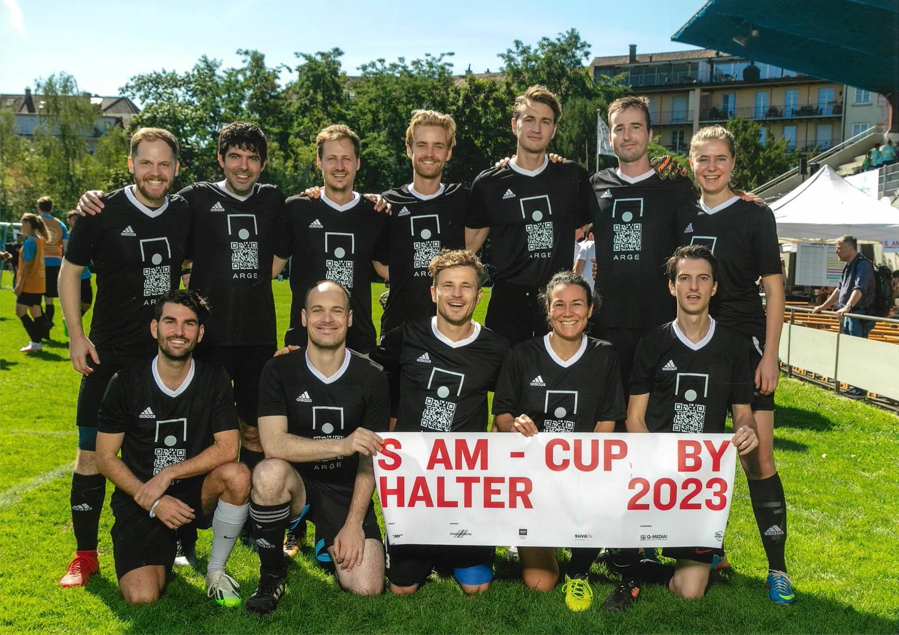

ARGE FC
S AM Cup by Halter 2023

In its second S AM Cup, ARGE FC debuted with its first visual identity, an all-black jersey designed by Raphael Kadid.

In its second S AM Cup, ARGE FC debuted with its first visual identity, an all-black jersey designed by Raphael Kadid.